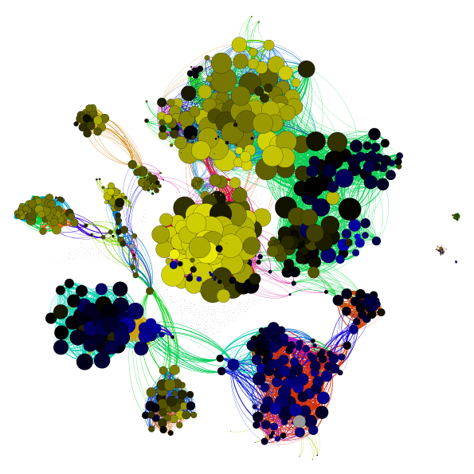
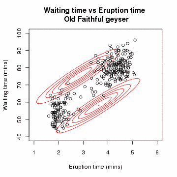
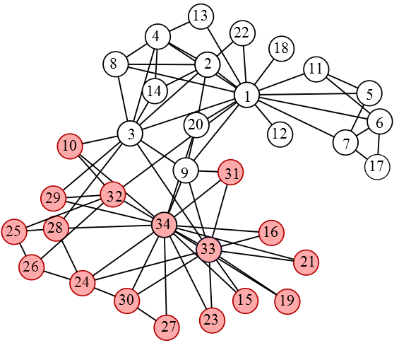
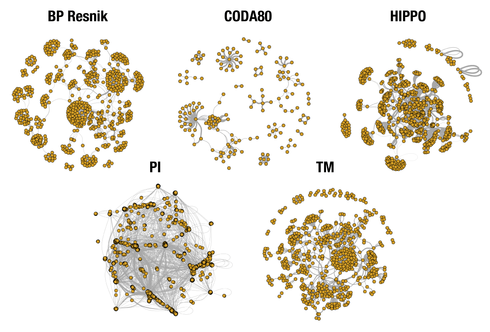

Cluster detection, analysis and visualization
An Introduction
Author: Aaron Brooks / @scalefreegan
You can follow along on 
http://scalefreegan.github.io/Teaching/DataIntegration
Course Overview
- Introduction
- Cluster Detection
- Cluster Evaluation
- Cluster Visualization and Interpretation
Goals: Introduction
- What is clustering? Why cluster? Role in data integration
- Motivating biological and non-biological examples
- Approaches to clustering
- Overview of lab data set and practicals
Clustering in a nutshell
Some way to group elements that are more similar to each other than they are to everything else
What does it mean to be more similar?
Cluster Data

Cluster Networks
Clustering Nodes vs Edges
Nodes: Spectral clustering
Edges: Link-community clustering
Hard vs Soft clustering
Hard Clustering
Elements belong uniquely to one cluster
Soft (Fuzzy) Clustering
Elements belong to more than one cluster
1-dimensional data
Hard Membership: Step-function
Fuzzy Membership: Smooth-function
Fuzzy C-means (FCM)
Gaussian Mixture Model with EM
Why cluster a network?
Define topologically interesting substructure
Examples
Karate Club
Yeast protein-protein interaction network
Network biology: understanding the cell's functional organization
Human disease network

Why cluster a network?
Clustering is a way to decipher network structure
Hairball ⇨ Comprehension
Clustering for Data Integration
Relationship between 4567 human genes related to mitosis
Graph kernels derived from 5 sources of information

Course goals
- Combine graph kernels
- Cluster integrated network